出陣約戰網頁・對比圖
2026-10-28・網頁開發（草圖，不改程式）・feature/jianfa・week7 設定（線上那一份）・375×812
為什麼要做
減法季批 3b「出陣約戰」的引擎上了線：約戰開著時按行動列的「出陣」（選項 id 照留 act:train），伺服器只回
sortie_duel.PICK、不花體力、不寫紀錄，等網頁打開「出陣前那張卡」（main.sortie_card）讓玩家封三招再貼約戰。可是 web/
沒有任何一行畫 main.sortie_card 或約戰卡清單 main.sorties，也沒有送 sortie_go／sortie_answer／sortie_join。
企劃者選了「做約戰網頁」：這一頁是三版畫面，挑完再做進程式（下一批）。
怎麼拍的
- 預覽伺服器（埠 8141、
sortiemock.localhost、TIANXIA_PROFILE=week7、模型網址指到死埠），工作樹的程式照原樣。 - 官軍的「顧長風」站在白馬津（冀州，中立地，兩軍都推得動；
sortie_go_problem()回空、sortie_card.why_not空）。 白馬津兩條的進度用管理者的「定一塊的進度」定成官軍 48、黃巾 31（效果同自然推）。 - 別的角色照公開的
sortie:go:<三招>貼了三張約戰：黃巾「褚大石」在白馬津（同一區，可應戰）、黃巾「郝三刀」在汝南荒野（潁川汝南，要移動）、 官軍「韓守義」在白馬津（同袍，可同去）；另外各有一位同陣營的人sortie:join同去，對面在推、同袍集火才有數字。 - 灰的兩種：站到涿郡（官軍的地方：
why_not＝「等對面來約」）、回白馬津把出陣冷卻設到 42 分後、今天用過一次（「還要 42 分」）。 - 甲乙丙都是注入在真的頁面上的原型（proto.js）：先
fetch("/api/main")、fetch("/api/map/state")拿伺服器真的給的資料再畫，window.fetch換成永遠不回（輪詢不會重畫掉），關動畫。class 盡量用現有的（.card、.btn、.seg、.sheet、.sf-row／.sf-chip、.wk-x）， 版面多出來的用sx-開頭。web/、tianxia/、content/、server.py一個字沒改。 - 無頭 Chromium＋CDP，375×812、
deviceScaleFactor2、淺色、減少動態。22 個場面量過：沒有橫向捲軸、按鈕與標題沒有被切掉的字。
總覽
一張拼好的（每張縮成 300 寬）：overview.png。底下逐列是原尺寸。

三版各自的好壞
甲行動列底下原地展開・三段全攤開
點「出陣」那一格，像探索三選一一樣在行動列底下展開一張卡：這一塊、贏了、封三招全攤開，出陣鈕在卡底。約戰卡一張一塊（兩行：誰、哪裡、還有幾分；鈕與一句說明），排在行動列底下、「此地還能做」上面。
- 跟探索三選一、移動同一個做法，不多一層。
- 「看完才封」最徹底：每一項數字都攤在那裡，按出陣之前一定經過。
- 約戰卡每張都寫清楚次數、體力、為什麼灰。
- 卡高 632 px：展開時整頁往下捲 463 px，行動列被捲出畫面，第一屏只剩這張卡。
- 約戰卡三張 278 px，開季的第一屏只看得到第一張半（最後一張落在分頁列底下）。
- 頁面越長越鬆：卡、約戰、此地還能做、眼下要事疊成一長串。
乙半屏抽屜・兩個頁籤
點「出陣」從底下拉上一層抽屜（同玩家卡的 .sheet）：上面「我來約戰／應戰・同去 3」兩個頁籤，第一頁三段＋封三招、出陣鈕釘在抽屜底；第二頁是約戰卡。江湖頁本身只在「出陣」格子角上多一個數字。
- 一個畫面看得完三段、出陣鈕永遠在拇指底下（釘在抽屜底），最像「一張卡」。
- 江湖頁的第一屏一個像素都不動（只多一個角標），不推擠「剛剛」、場景與行動列。
- 應戰也在同一層：按了換成應戰的那一頁，同一個封三招。
- 約戰卡藏在抽屜第二頁：只有一個數字在提醒，十分鐘的窗很容易錯過。
- 多一層要收（×、點暗處），跟探索、移動的「就地展開」不一樣。
- 抽屜蓋住「剛剛」：按完出陣看結果要先收抽屜。
丙原地展開・兩段收成一行（推薦）
同甲在行動列底下展開，但「這一塊」「贏了」各收成一行（要緊的數字寫在那一行：官 48／黃 31・還差 52 易手；進度 +30・貢獻 +10・分紅約 200），點了攤開全部（1b）；封三招與出陣鈕緊接在後。約戰卡一張一行，排在行動列底下。
- 卡高 409 px：展開只捲 239 px，行動列還在畫面上方，封三招與出陣鈕都在第一屏。
- 約戰一張一行，三張 183 px，開季那一屏（沒按任何東西）就看得到全部三張與應戰／同去鈕。
- 跟探索三選一同一個做法；收起來的兩行點一下就是甲的全攤開。
- 「看完才封」打了折：戰利、軍令、戰書、分紅以外的細項要點開才看得到（要緊的幾個數字在那一行上）。
- 一行的約戰卡放不下次數、體力與灰的原因：別區那張只寫「前往 18 分」，為什麼灰要點進去才知道。
推薦丙：十分鐘的約戰最怕沒看到，丙在不按任何東西的第一屏就把三張約戰與應戰、同去的鈕擺出來；出陣卡展開之後行動列還在、封三招與出陣鈕不用再捲。 企劃者若要「看完才封」照字面（每一項都攤開才准封），就用丙的頁面（約戰一張一行）配乙的抽屜當出陣卡——抽屜一屏看得完三段、鈕釘在底下。
修前：按「出陣」什麼都沒發生

POST /api/choose {"id":"act:train"} 回 200、沒有 message，main.now 還是開季那一則；整頁 HTML 一字不差，兩張 PNG 逐像素比對 0 個像素不同。逐列對照（原尺寸 375 寬）
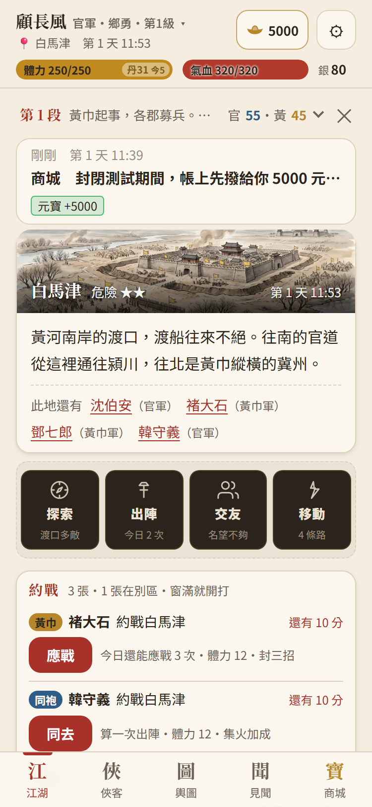
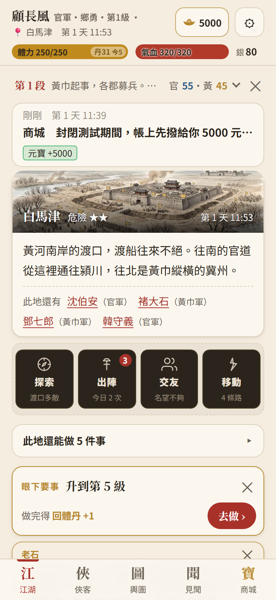
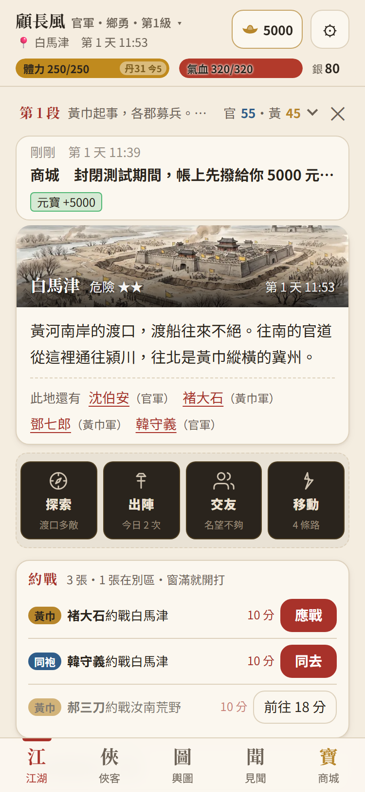
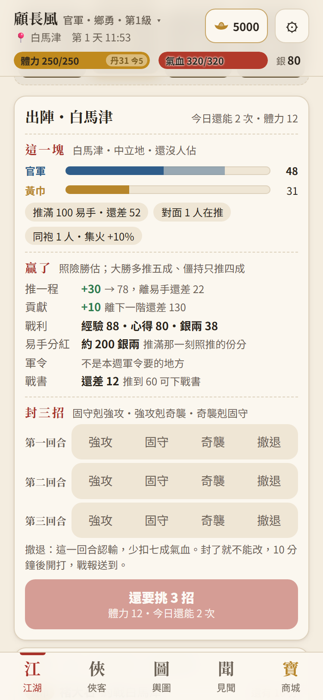
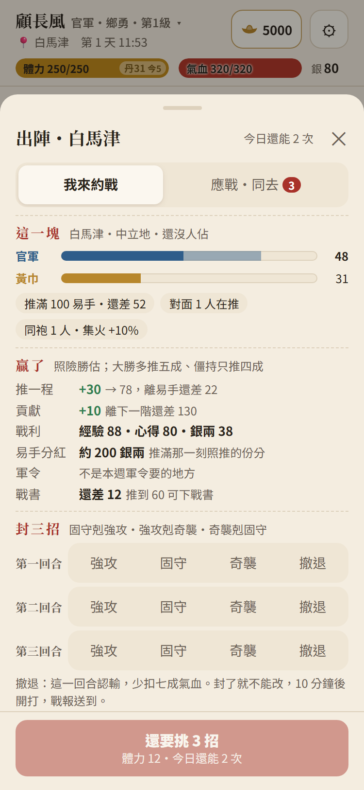
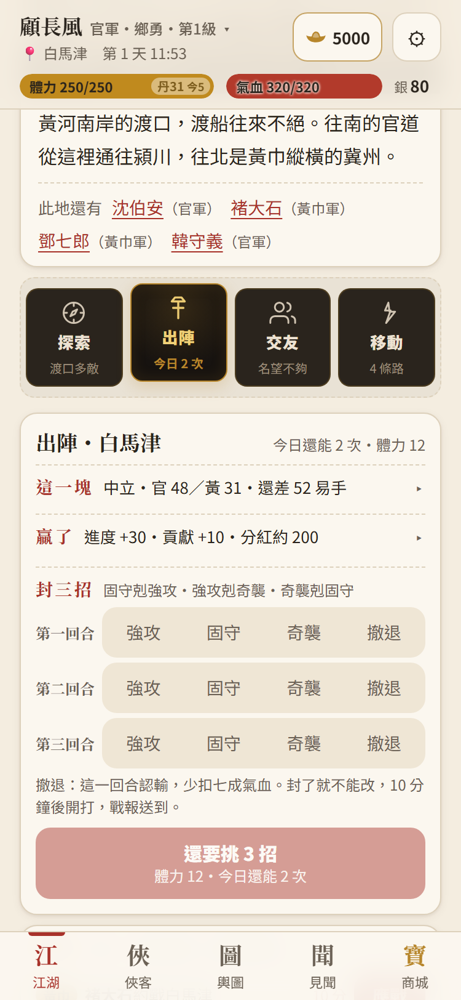
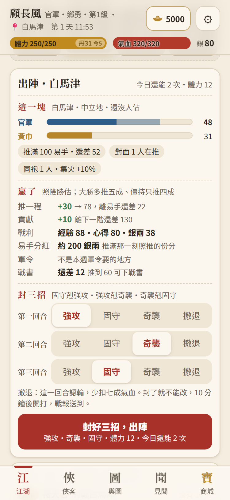
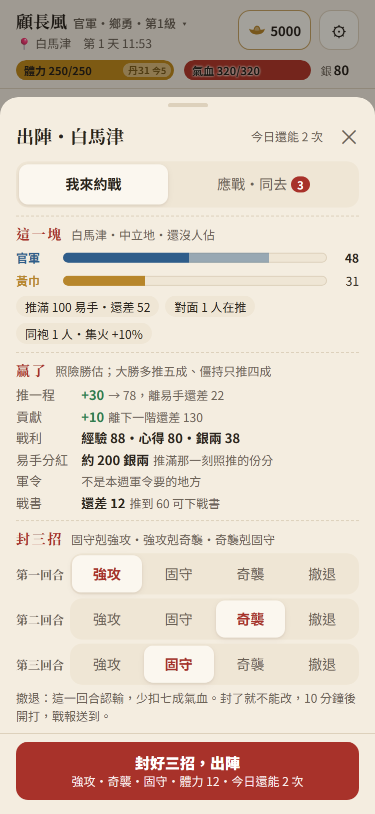
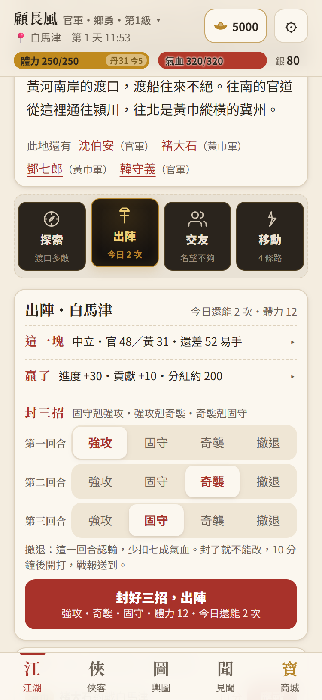
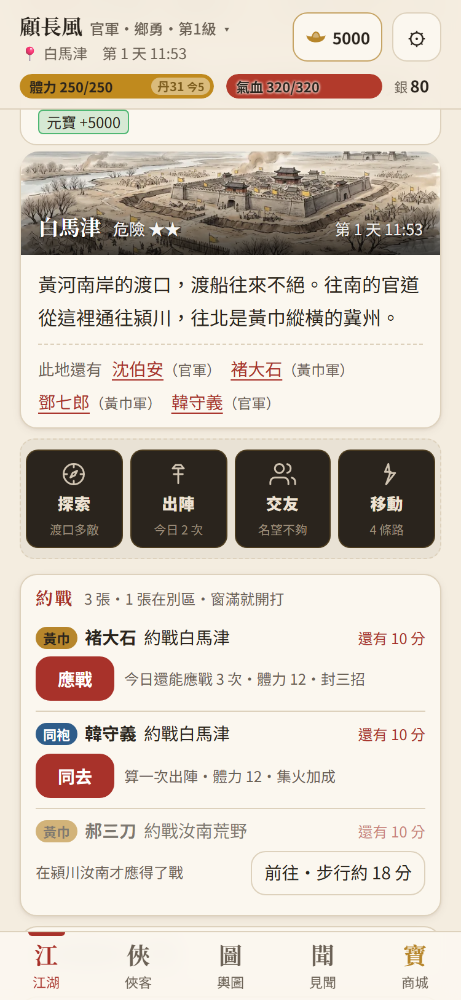
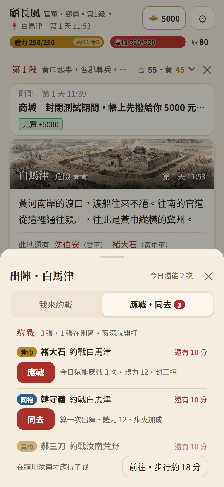
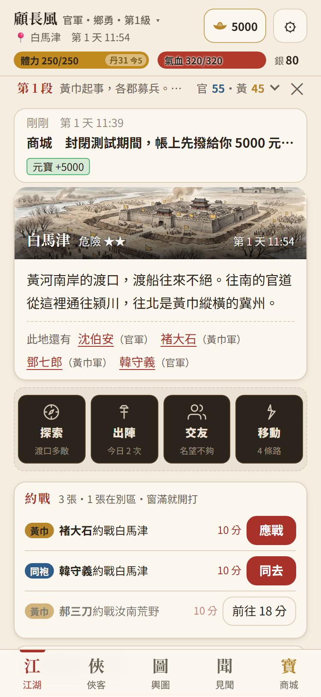
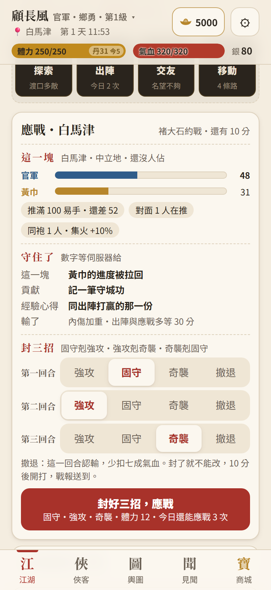
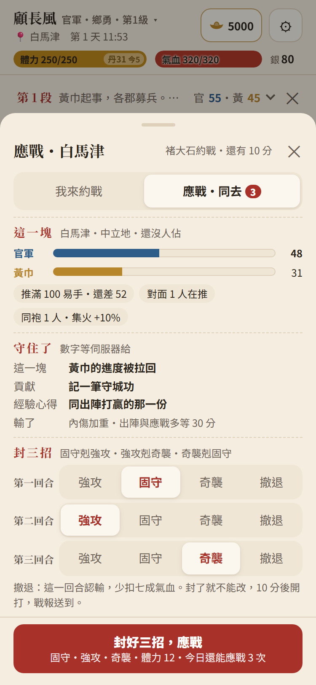
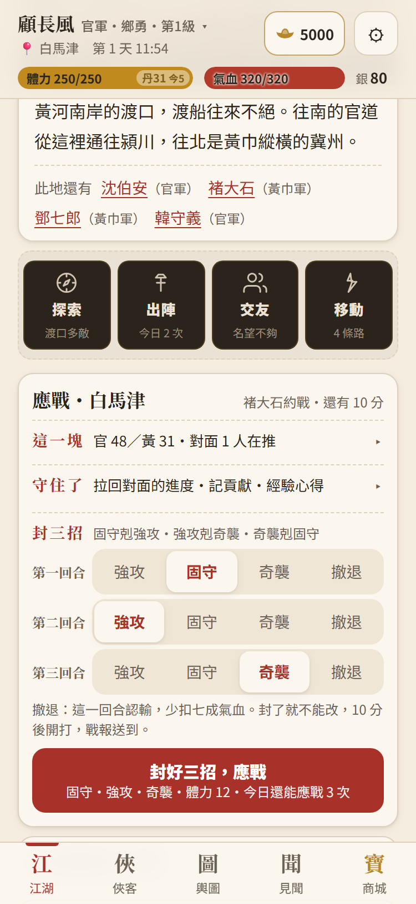
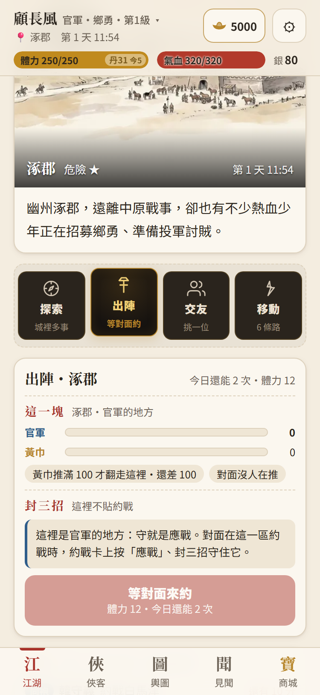
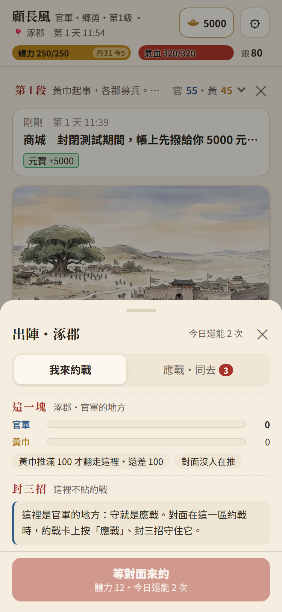
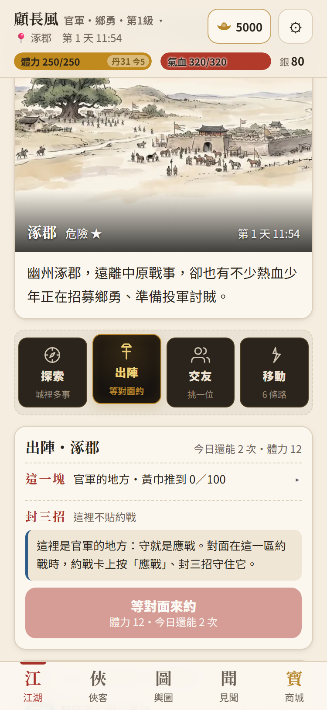
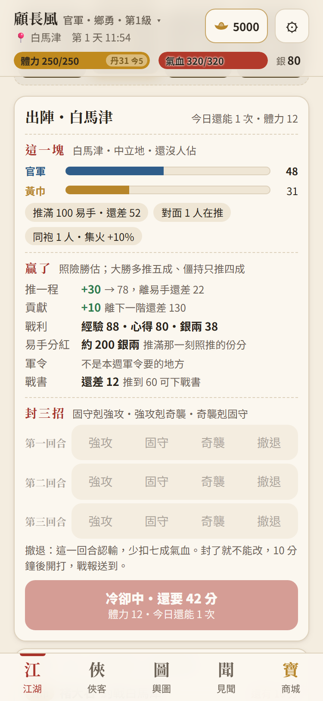
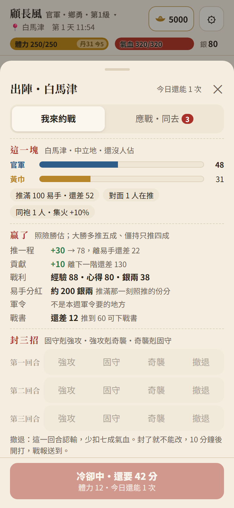
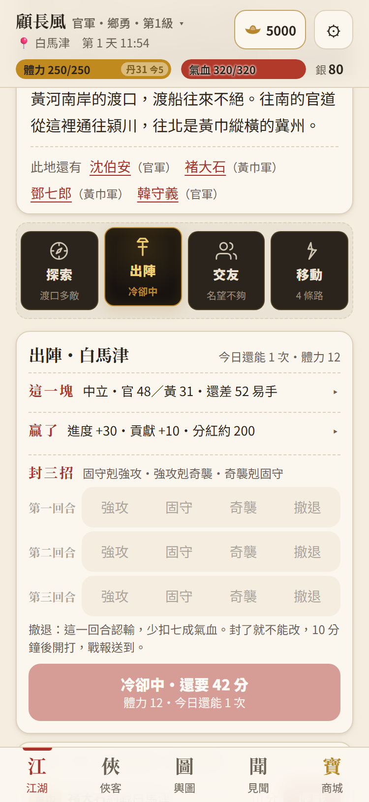
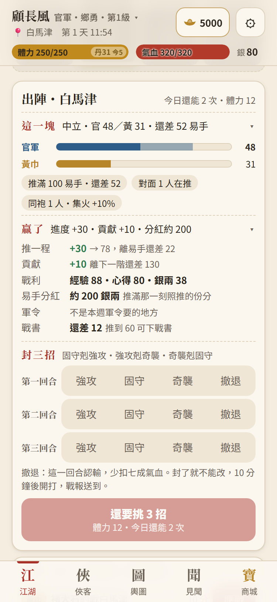
灰著也點得開
三版都假設：出陣那一格灰著也點得開那張卡（設計 4.3「每一個功用按前按後都看得到」），卡上的鈕寫為什麼。現在伺服器在貼不了時把 act:train 給成 enabled: false，網頁照灰格子畫、點了只浮一句（opt-why）；
做進程式時這一格要當展開鈕（同探索三選一的 data-act="wheel"），卡的資料 main.sortie_card 灰著的時候本來就有（why_not 寫原因）。截糧的運糧隊經過時那一格是「出陣・截糧」、照舊直接打，不開卡。
資料不夠或不對的地方（只列，沒改引擎）
| # | 哪裡 | 現在 | 畫面要的 |
|---|---|---|---|
| 1 | sortie_card 歸誰 | 沒有這個鍵 | 設計「這一塊（歸誰…）」：原型改讀 /api/map/state 的 places[block].control。卡上多一個 holder 比較乾淨。 |
| 2 | bars.theirs、約戰卡的 attacker_side | 只有數字、只有陣營 id | theirs 是「其他陣營的最大值」，不知道是哪一軍；陣營的名字（官軍、黃巾）卡上都沒有，原型寫死。 |
| 3 | 自家的地方的 to_flip | 算的是自己那一條（涿郡 0 → 還差 100） | 自家的地方要的是「對面離翻走這裡還差多少」（100 − 對面那一條）；gain（推一程、分紅、戰書）在自家的地方也照算，沒意義。原型自己換掉了。 |
| 4 | convoy_at | 只有「此刻正經過」時給那一路的名字 | 設計「運糧隊幾點經過」：沒有時刻。 |
| 5 | foe_pushing | 人數 | 設計「對面在推的是誰」：要名字的話伺服器得給（conquest.pushers 有）。 |
| 6 | 窗幾分鐘、應戰的體力 | 卡上都沒有（window_minutes 10、answer_stamina 12） | 原型寫死「10 分鐘後開打」「體力 12」；出陣的體力有（cost）。 |
| 7 | 應戰前看的東西 | 沒有 | 守住了拉回多少、貢獻、經驗心得都沒數字；約戰在同一區的另一塊時，那一塊的兩條也沒有（sortie_card 只給腳下這一塊）。原型只在約戰就在腳下那一塊時畫兩條。 |
| 8 | 約戰卡 | 沒有同去幾人、沒有勝算 | 同袍那張想寫「已有 N 人同去」；輿圖的 places[*].odds 有勝算（打守軍的），約戰卡與出陣卡都沒有。 |
| 9 | 別區那張的 why_not | 「在潁川汝南才應得了戰」10 個字 | 放不進鈕：原型不畫應戰鈕，原因寫成一句、鈕寫「前往・步行約 18 分」（travel_minutes 是步行；設計寫「給疾行」，疾行幾分沒有）。點了開輿圖選那一處。 |
| 10 | 修前 | /api/choose 回 200、沒有 message、main.now 不變 | PICK 那一句沒寫紀錄也沒回給網頁（照設計），所以現在的網頁按了完全沒反應；輿圖卡上的「出陣・攻」（web/map.js）也是送 act:train，一樣沒反應（沒另外拍）。 |
| 11 | main.sorties 排序 | 新的在前 | 原型改成應得了的、同去得了的在前、別區的在後（網頁自己排即可）。 |
| 12 | 推送指紋 | 交接已知 | server_push.world_fingerprint 沒算約戰：別人剛貼的約戰要等十秒一次的輪詢才看得到（計畫 4.0 之四第 9 條，雲端側）。 |
新寫的字（全部待 joy 潤）
| 哪裡 | 字 |
|---|---|
| 卡頂 | 出陣・{地點}／今日還能 {n} 次・體力 {n}；應戰・{地點}／{名號}約戰・還有 {n} 分 |
| 這一塊 | 這一塊／{地點}・中立地・還沒人佔／{陣營}的地方；推滿 100 易手・還差 {n}；對面 {n} 人在推／對面沒人在推；同袍 {n} 人・集火 +{n}%／同袍還沒人來；運糧隊「{名}」正經過；{對面}推滿 100 才翻走這裡・還差 {n} |
| 贏了 | 贏了／照險勝估；大勝多推五成、僵持只推四成；推一程 +{n} → {n}，離易手還差 {n}／推滿易手；貢獻 +{n} 離下一階還差 {n}；戰利；易手分紅 約 {n} 銀兩 推滿那一刻照推的份分；軍令 正是本週攻城軍令／不是本週軍令要的地方；戰書 還差 {n} 推到 {n} 可下戰書／已可下戰書 |
| 守住了（應戰） | 守住了／數字等伺服器給；這一塊 {對面}的進度被拉回；貢獻 記一筆守城功；經驗心得 同出陣打贏的那一份；輸了 內傷加重・出陣與應戰多等 30 分 |
| 封三招 | 封三招／固守剋強攻・強攻剋奇襲・奇襲剋固守；第一（二、三）回合；撤退：這一回合認輸，少扣七成氣血。封了就不能改，{n} 分鐘後開打，戰報送到。；這裡不貼約戰；這裡是{陣營}的地方：守就是應戰。對面在這一區約戰時，約戰卡上按「應戰」、封三招守住它。 |
| 鈕 | 還要挑 {n} 招；封好三招，出陣；封好三招，應戰；冷卻中・還要 {n} 分；（灰著時照 why_not）；小字「{三招}・體力 {n}・今日還能 {n} 次」 |
| 約戰卡 | 約戰／{n} 張・{n} 張在別區・窗滿就開打；同袍；約戰{地點}；還有 {n} 分；應戰；同去；今日還能應戰 {n} 次・體力 12・封三招；算一次出陣・體力 {n}・集火加成；前往・步行約 {n} 分；前往 {n} 分 |
| 乙的抽屜 | 我來約戰；應戰・同去 {n} |
沒有一個字寫到誰是怎麼補位的；守軍迎戰只在戰報裡由引擎寫，畫面上不提。